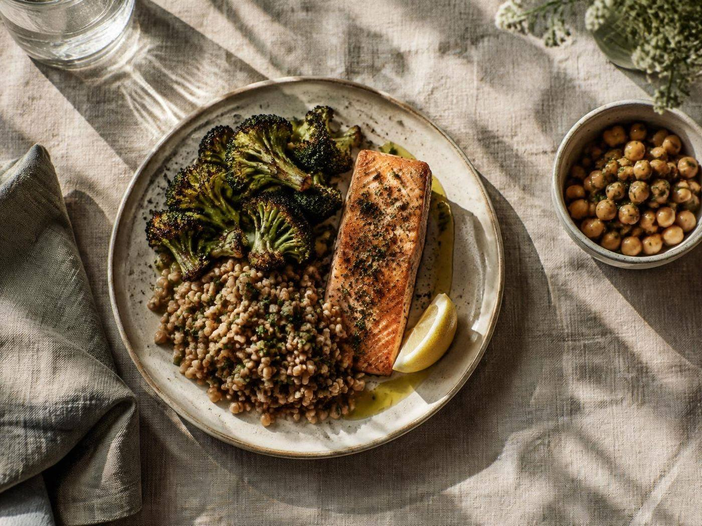
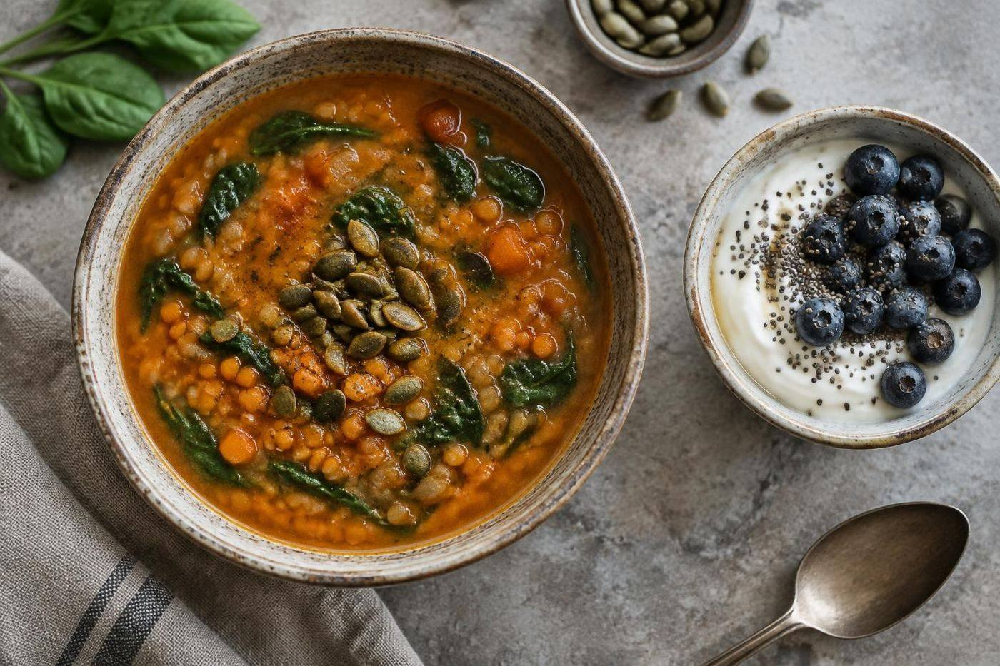

Clinical context
Experience spanning long-term and acute care.

Mary Catherine (Cathy) Peters · Registered Dietitian · Virginia
Clinical nutrition perspective for complex care and nutrition-related legal matters, informed by more than 14 years across long-term and acute care.
Clinical nutrition · Expert witness work · Legal consulting
A clinical nutrition perspective
Nutrition is central to patient care. Clear, well-grounded expertise can help make complex clinical facts easier to understand.

Mary Catherine Peters is a Registered Dietitian with 14+ years of experience across long-term care and acute care. Her profile highlights nutrition-related legal consulting and expert witness work, bringing a dietitian’s perspective to cases where nutrition matters.
Meet Cathy ↘Experience spanning long-term and acute care.
A dietitian’s lens on nutrition-related questions.
Writing, training, and consulting are among her listed services.
About Cathy
Registered Dietitian with 14+ years of experience across long-term care and acute care, and a professional focus that includes nutrition expert witness work and legal consulting.
Her LinkedIn About section describes more than 14 years of dietetics experience across long-term care and acute care.
Nourish is the organization named in her LinkedIn profile heading.
The profile lists Florida State University from 1991 to 1994. A second education entry appears for 1995–1996, but its institution and program are not visible in the public preview.
Professional profile
Public profile highlights include dietetics, care settings, legal consulting, writing, and training.
Areas of expertise
Cathy’s LinkedIn profile and posts point to clinical nutrition and legal consulting.
More than 14 years of dietetics experience across the care settings named in her profile.
View professional profile ↗Her profile lists legal consulting, and her public posts discuss the role of Registered Dietitians in nutrition-related litigation.
Connect with Cathy Peters ↗Writing and training are listed services, alongside healthcare consulting and presentation design.
Ask about services ↗Nutrition in the record
Cathy’s public posts discuss nutrition standards of care, malnutrition, and the value of dietitian expertise in legal matters. Her profile lists healthcare consulting, writing, and training.
Connect on LinkedInExperience across long-term and acute care settings.
Public writing addresses malnutrition and nutrition-related case questions.
Training and writing are among her LinkedIn service categories.
Research and writing
Her LinkedIn profile lists a 2006 publication on vitamin B12 supplementation after gastric bypass and a 2026 article series on pediatric malnutrition and forensic medical-legal case reviews.
Selected work
Selected items visible on Cathy’s public LinkedIn profile.
A series of forensic medical-legal case reviews involving severe pediatric malnutrition.
Listed in Surgery for Obesity and Related Diseases; focuses on supplementation after gastric bypass.
Her profile describes social content creation across industries and educational voice work.
Additional experience
Her public profile also reflects creative and community interests.
Volunteer · Animal welfare
Volunteer service is listed from May 2014.
Professional services
LinkedIn categories include legal consulting, healthcare consulting, content strategy, presentation design, and marketing services.
View Cathy’s profile ↗Connect
Her LinkedIn profile provides the current way to request a proposal and connect professionally.
Contact
Mary Catherine (Cathy) Peters · Registered Dietitian · Chilhowie, Virginia
Open LinkedIn profileMary Catherine Peters on LinkedIn ↗